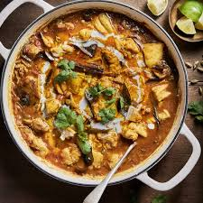

Home
Sri Lankan Chicken Curry

Ingredients
- 1 kg chicken pieces or 1.5kg including bones - leave skin seperately if you want, we can use this for fried crispy skins
- 2 onions, finely chopped
- 3 cloves garlic, minced
- 2 inch ginger, grated
- 2 tomatoes, chopped
- 1 cup coconut milk
- 2 tbsp roasted curry powder
- 2 tbsp unroasted curry powder
- 1 tsp coriander powder
- 1 tsp turmeric powder
- 1 tsp chili powder
- Salt to taste
- Fresh coriander leaves for garnish
Steps
- About 4-6 hours prior, marinate the chicken in 2 tbsp of olive oil or coconut oil, 3 tbsp of water, 2 tbsp of roasted curry powder, 1tbsp of chilli powder and 1 tsp of salt.
- Heat oil in a large pot over medium heat. Add the chopped onions and sauté until they are golden brown.
- Add the minced garlic and grated ginger to the pot and cook for another minute until fragrant.
- Add the chopped tomatoes and cook until they soften and break down, about 5 minutes.
- In a small bowl, mix together the roasted curry powder, unroasted curry powder, coriander powder, turmeric powder, chili powder, and salt. Add this spice mixture to the pot and stir well to coat the onions and tomatoes. Cook for 2-3 minutes to allow the spices to release their flavors.
- Add the chicken pieces to the pot and stir to coat them with the spice mixture. Cook for about 5 minutes until the chicken starts to brown.
- Pour in the coconut milk and bring the mixture to a simmer. Reduce the heat to low, cover the pot, and let it cook for about 30-40 minutes or until the chicken is cooked through and tender. Stir occasionally to prevent sticking.
- Once the chicken is cooked, taste and adjust seasoning if needed. Garnish with fresh coriander leaves before serving.